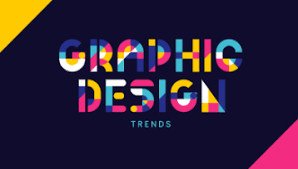

Inovasi Terbaru dalam Desain Grafis
Dalam beberapa tahun terakhir, perkembangan dalam dunia desain grafis semakin pesat. Teknologi seperti kecerdasan buatan (AI) mulai digunakan untuk mempercepat proses desain, sementara teknik baru seperti desain responsif semakin penting untuk memenuhi kebutuhan berbagai perangkat.
Baca Selengkapnya
Pentingnya Desain Komunikasi Visual dalam Branding
Branding yang sukses tidak hanya tergantung pada produk yang bagus, tapi juga pada bagaimana produk tersebut dikomunikasikan secara visual. Desain komunikasi visual berperan penting dalam membangun identitas merek yang kuat dan mudah diingat.
Baca Selengkapnya
Tren Warna 2024 untuk Desain Visual

tren desain grafis 2024 merujuk pada gaya, teknik, dan pendekatan yang akan mendominasi dunia desain grafis sepanjang tahun ini. Tren ini dipengaruhi oleh berbagai faktor, termasuk perkembangan teknologi, perubahan preferensi konsumen, isu sosial, dan budaya pop.
Tren ini mencakup aspek visual seperti penggunaan warna, tipografi, ilustrasi, dan tata letak, serta pendekatan fungsional dan etis dalam desain, seperti keberlanjutan dan inklusivitas. Dengan memahami tren ini, desainer dapat menciptakan karya yang relevan dan menarik bagi audiens modern.
Baca Selengkapnya
Daftar Proyek
Halaman 2 dari proyek Anda.